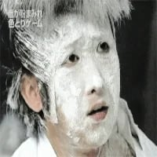

그쪽 출신 일본 미용사
댓글

어디출신?
미시시피~
식스센스 나온 분이네
왜 결과물은 또 멀쩡한데
미용사 부인인가?
어디 출신인데 대공분실이냐
참고있는 여자가 더 대단해보이는데 ㅋㅋ
물고문 실력보니까 안기부 출신인갑네
그림자복도?
물고문 이구만
미용사 즐기고 있네
린도다 린도
도자기 빚냐ㅋㅋㅋ
물고문 ㅅㅂㅋㅋ
ㅅㅂ 개근지 진심인지 구분이 안돼

웃음참기 어케했냐ㅋㅋㅋㅋㅋㅋㅋ 나는 면도크림 붓으로 바르는것도 못참는데ㅋㅋㅋㅋㅋㅋ
귀여워
남산출신이구나
저가게 오사카에 있고 틱톡커나 유튜버들이 이용한다고함 쇼츠랑 릴스에 한번씩 뜨더라ㅋㅋ
보는것만으로도 숨 막힐거 같네 물 고문아닌가
ai아님??
식스센스에 나오는 분이 진짜라서 놀랐는데 ㅋㅋㅋㅋㅋㅋㅋㅋㅋㅋㅋㅋㅋ
성추행, 물고문, 재물손괴
뭐야? 통천 아이돌 메이크업 하는 과정인줄 알았어
머리감기를 보니 중앙정보부 출신이신 거 같은데
비밀기지 불어서 정상적으로 해줬나보구나
남영동 출신이냐?
대체 어디 출신이어야 저러는건데 ㅋㅋㅋ